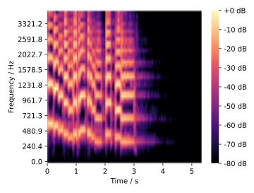

spectrum()¶
- audplot.spectrum(magnitude, hop_duration, centers, *, channel=0, cmap='magma', ax=None)[source]¶
Plot spectrum.
- Parameters:
- Return type:
- Returns:
Image object
Examples
>>> import librosa >>> import matplotlib.pyplot as plt >>> x, sr = librosa.load(librosa.ex("trumpet")) >>> y = librosa.feature.melspectrogram(y=x, sr=sr, n_mels=40, fmax=4000) >>> y_db = librosa.power_to_db(y, ref=np.max) >>> hop_dur = 512 / sr # default hop length is 512 >>> centers = librosa.mel_frequencies(n_mels=40, fmax=4000) >>> image = spectrum(y_db, hop_dur, centers) >>> cb = plt.colorbar(image, format="%+2.0f dB") >>> cb.outline.set_visible(False) >>> plt.tight_layout()
